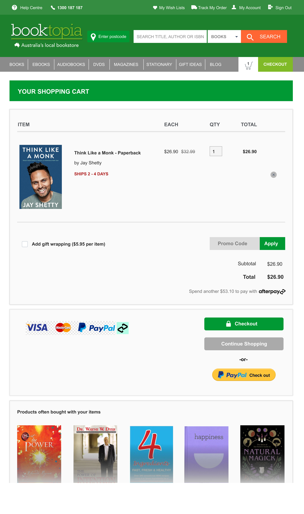

UI Challenges
An assortment of creative designs
An assortment of UI challenges, works and projects that I created in my free time to expand my skills as a designer.
SoundCloud Redesign
Designed February 2022Uplabs provided a brief for a UI challenge which was to redesign SoundCloud with our own personal creative touch. I had always perceived SoundCloud as more than a streaming platform. SoundCloud has been a hub for new and upcoming artists to express their talents. I redesigned SoundCloud with a social aspect to allow users to follow one another. I wanted to focus on the user's ability to discover new artists who create music either as a profession or even a hobby. I also wanted to modernise the landing page of SoundCloud as I personally believed it looked outdated.

Booktopia Shopping Cart Rework
Designed January 2022The checkout experience was reworked for Booktopia. The research and redesign of the experience was completed in 2 hours as a task. I quickly conducted 2 user tests to identify the issues with the shopping cart section of the Booktopia purchasing experience. The main issue with the checkout experience was the cognitive overload with the information presented. Users wanted to "shorten the journey to get the answer" which they regarded the checkout experience to be long (in comparsion to other online book stores). My main focus was to redesign the cart page to clearly present the necessary information.
The main changes to the shopping cart page were the placement of the objects and the spacing of information. As cognitive overload was main issue for the users, fixing the placement of information was a priority to allow the user to properly follow the information flow. I also redesigned the entire checkout experience for the user when they input address, delivery options and payment details.
